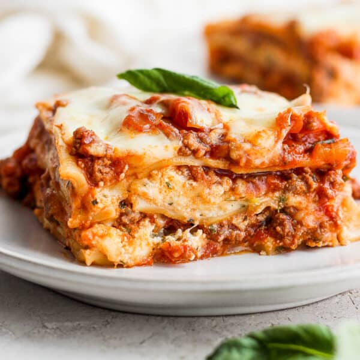

Lasagna

You won't need alot here
Ingredients
- 12 lasagna noodles uncooked
- 4 cups mozzarella cheese shredded
- 1⁄2 cup parmesan cheese shredded
Tomato Sauce
- 1⁄2 pound lean ground beef
- 1 onion diced
- 2 garlic cloves minced
- 36 ounce pasta sauce
- 2 tablespoons tomato sauce
- 1 teaspoon italian seasoning
Cheese mixture
- 2 cups ricotta cheese
- 1⁄4 cup fresh parsely chopped
- 1 egg beaten
instructions
- Heat oven to 350°F. Cook pasta al dente according to package directions. Rinse under cold water and set aside.
- Brown beef, onion and garlic over medium high heat until no pink remains. Drain any fat.
- Stir in pasta sauce, tomato paste, Italian seasoning. Simmer 5 minutes.
- Make Cheese Mixture by combining 1 ½ cups mozzarella, ¼ cup parmesan cheese, ricotta, parsley, and egg.
- Add 1 cup meat sauce to a 9x13 pan.Top with 3 lasagna noodles. Layer with ⅓ of the Cheese Mixture and 1 cup of meat sauce. Repeat twice more.Finish with 3 noodles topped with remaining sauce.
- Cover with foil and bake 45 minutes.
- Uncover, sprinkle with remaining cheese (2 ½ cups mozzarella cheese and ¼ cup parmesan), and bake an additional 15 minutes or until browned and bubbly. Broil 2-3 minutes if desired.
- Rest 10-15 minutes before cutting.
Hope you enjoy!